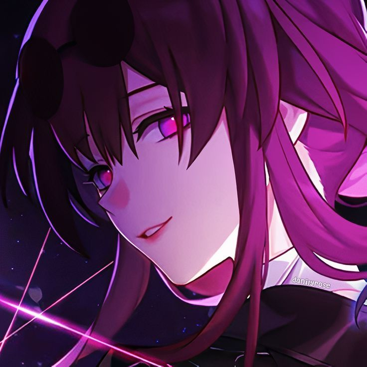
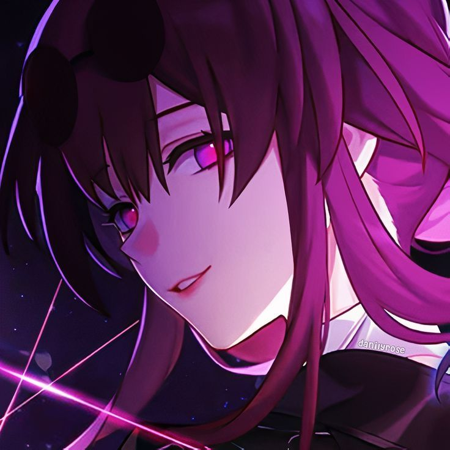

Kafka

Arlecchino

Furina

Ellen Joe

| Character | Story | Gameplay |
|---|---|---|

Kafka |
She is a Stellaron Hunter, one of the primary antagonists in Honkai Star Rail, and is the most wanted of all the 4 Members. She is the one who awakened us and started our journey through the game. We encounter her in many story missions, and get to play through her Story Quest. Her perfect fingers are capable of playing the violin flawlessly, handling weapons like a professional, and utilizing her "spirit whisper" with ease. She is a formidable persona who is capable of attacking 80 armed guards at once. | Kafka's playstyle utilizes the Damage-Over-Time mechanic, applying her own shock DOT when attacking. Additionally, when using her skill and ultimate, Kafka can detonate all DOTs on an enemy, up to a 200% scale. She pairs really nicely with any other DOT character, as both utilize eachother's debuffs and attacks at the same time. She is a premium unit to own and quite fun to play. |
Arlecchino |
She is the "Father" of "The House of the Hearth", and is the 4th Fatui Harbinger. Her element is Pyro. Arlecchino is a viciously strong, ruthless, and deadly character. She works as mainly a diplomat, masking her intentions and using decisive evidence in debates to win. When things need to get done, she WILL get it done. She is unrelenting in her chase, and swift in her blows. However, she does have a kind side. Her orphanage, though used as a training ground, does indeed help house orphaned children in need. Arlecchino loves and cares about all the children she raises and so do they. Overall, a terrifying opponent, a kind person at heart. | Arlecchino uses the element of Pyro, and her scythe deals heavy damage with each swing. She uses the "Bond-of-Life" mechanic, which blocks all incoming healing until it is fully removed. She applies bond of life to herself, and in return from barring herself from healing in combat, she gains massive multipliers for her damage. She is very flexible in many teams. She fits in vaporize - Hydro + Pyro, overload - Electro + Pyro, or even Mono-Pyro - all/most members are strictly pyro. |
Furina |
The Hydro Archon, Furina de Fontaine, presides over the nation of Fontaine. She is an icon, a famous star in many operas, and takes joy in watching even court trials, for they are as a play to her. Furina has the spotlight all the time, and is a master in the art of Theatre. She is nearly 500 years old, and her carefree attitude houses a secret, none know but herself. Furina loves theatre, and no matter how many times she tries to distance herself from it, it always pulls her back into the world of acting and stageplay. | Furina is a phenomenal Sub-DPS and Support, while also doubling as a healer if you switch to her "Pneumia" state. Her default state, however, is "Ousia" and she drains her allies' health to empower her Troupe, who scales off of how much HP they drain. The more HP they drain, the bigger the numbers. When she uses her Ultimate, any health that is either lost or gained is converted into fanfare points which accumlates and buffs her entire team's total damage output. She is reccomended to be played with a healer to negate the HP drain effects while maintaining her damage output, as her "Pneumia" state can't deploy her Troupe to attack. Overall, she's an exceptional Sub-DPS, Buffer, and Semi-Healer. |
Ellen Joe |
Ellen Joe is a High-Schooler, Shark-Thiren - a Human-Shark Hybrid, who is also employed at a prestigous Maid Housekeeping Company. She loves sweets, napping, and lazing about generally. She also enjoys hanging with her friends, both her highschool friends and her coworkers. She is a skilled maid, who just so happens to also be very deadly as a unit. Her element is Ice, and the cold, hard bite of a shark doesn't relent. She is scarily effective without even trying to, but at heart she's still just a high-schooler who loves basic things like sleep, sweets, and friends. | Ellen Joe is a main damage dealer that uses the Ice element. She scales off of Crit DMG and Crit Rate, and she pairs really nicely with other Victoria Housekeeping units. She is excellent at fast, strong jabs from her Shark Scissor Spear, and as said previously, give a hard, cold bite using it. She can freeze up her enemies, before quickly beating them down, assisted by your other team members of course. Ellen is an excellent damage dealer, one who brings a lot of pain while also hindering their opponent while doing so. |
Jane Doe |
Jane Doe works for the Criminal Investigation Response Tea as an undercover operative with faces of many, and names of many more; a Jane Doe. Her secrecy is strict, not even her other coworkers know her many identities. She is a Rat-Thiren - Human-Rat hybrid. Jane has gone on many undercover missions, ones where she fights in the shadows, and those with her blending in plain sight. All succesful operations. Her planning and secrecy forces her into a solitary state, mostly void of interaction between any of her coworkers, meeting up very rarely. She is a superb undercover operative, with a clean record of succesful missions. | Jane Doe is an Anomaly DPS, one that uses statuses to build up and explode at capacity to deal heavy damage. She works well in Disorder teams, where 2 Anomaly DPSs are present. Her main damage output are counterattacks, where you attack right after dodging an enemy hit. After enough hits, she can enter a state where her normal attacks are empowered and have an increased Anomaly Status build-up rate. She works well with other Anomaly units as Disorder compounds on the already massive damage of statuses. Jane Doe is a swift attacker that builds up power overtime and then releases it to take out an enemy quickly. Overall, she is a comfortable unit to use because her dodge window times are very generous, and counterattacking the enemy after every failed hit on me is quite satisfying. Truly what you could call a "Rat Playstyle". |
Nina, T. (2024, January 1). Kafka PFP Honkai Star Rail icon. Pinterest. https://ph.pinterest.com/pin/288511919896068102/
琪琪. (2023, September 1). Icon. Pinterest. https://ph.pinterest.com/pin/76913106132916700/
Furina: Theme Collection (from “Genshin Impact”). (2023, November 10). Spotify. https://open.spotify.com/album/1gThANNWHxdYWVdsAL2Eoy
Artists of Hoyoverse. (2024, July 16). Uniform Shark Tail Scissors (From Zenless Zone Zero) [Ellen Joe Theme]. Spotify. https://open.spotify.com/album/3EYViMmxHFCIevygVJOZYK
Antonia. (2024, October 24). Jane Doe Icon ZZZ. Pinterest. https://in.pinterest.com/pin/629518854198368017/